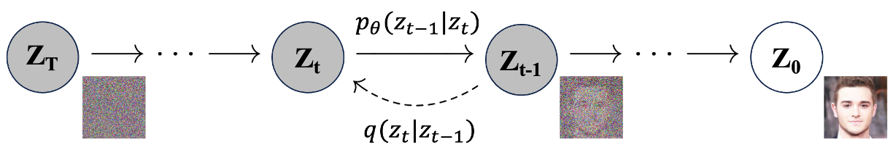

Diffusion models were first introduced in the seminal work by Sohl-Dickstein et al. (2015). The core idea involves reversing a Markov chain-based forward diffusion process, which gradually degrades the structure of the data \(\mathbf{z}_0\) from the real data distribution \(q(\mathbf{z}_0)\), by adding noise over a sufficient number of steps. When this noise is Gaussian, as is commonly assumed in practice, the cumulative effect transforms the data distribution towards a standard normal distribution \(\mathcal{N}(0, I)\) as the forward process progresses. We can then sample from this distribution and use a learned reverse process to generate new samples that match the real data distribution.
Specifically, as illustrated in Figure 1, we define the forward diffusion process \(q\) that gradually applies Gaussian noise to the data distribution \(\mathbf{z}_0 \sim q(\mathbf{z}_0)\) with a variance schedule \(\beta_t \in (0, 1)\) as follows:
\[
q(\mathbf{z}_{1:T} \vert \mathbf{z}_0) := \prod_{t=1}^T q(\mathbf{z}_t \vert \mathbf{z}_{t-1}) \tag{1}
\]
\[
q(\mathbf{z}_t \vert \mathbf{z}_{t-1}) := \mathcal{N}(\mathbf{z}_t; \sqrt{1 - \beta_t} \mathbf{z}_{t-1}, \beta_t \mathbf{I}) \tag{2}
\]

Figure 1: Illustration of the forward and reverse diffusion process. Figure adapted from Ho et al. (2020).
Here, \(t\) and \(T\) refer to the current and total timesteps, respectively. With a sufficiently large \(T\) and a properly defined variance schedule \(\beta\), the final \(\mathbf{z}_T\) will approximate an isotropic Gaussian distribution, where variances are equal in all directions. We can then reverse the forward diffusion process by starting from \(\mathbf{z}_T \sim \mathcal{N}(0, I)\) and gradually obtain a sample \(\mathbf{z}_0\) that resembles the real data distribution \(q(\mathbf{z}_0)\), defined as follows:
\[
p_{\theta}(\mathbf{z}_{0:T}) := p(\mathbf{z}_T) \prod_{t=1}^{T} p_{\theta}(\mathbf{z}_{t-1} \vert \mathbf{z}_{t}) \tag{3}
\]
\[
p_{\theta}(\mathbf{z}_{t-1} \vert \mathbf{z}_{t}) := \mathcal{N}(\mathbf{z}_{t-1}; \mu_{\theta}(\mathbf{z}_{t}, t), \Sigma_{\theta}(\mathbf{z}_{t}, t)) \tag{4}
\]
Where all \(\mathbf{z}_t\) for \(t \in \{0, 1, \ldots, T \}\) share the same dimensionality, \(p_{\theta}(\mathbf{z}_{t-1} \vert \mathbf{z}_{t})\) is practically a neural network learned to approximate the actual reverse distribution \(q(\mathbf{z}_{t-1} \vert \mathbf{z}_{t})\), as it depends on the entire dataset which is not easily accessible. The term \(p_{\theta}(\mathbf{z}_{0:T})\) denotes the entire learned reverse process.
An interesting property of the forward process is the existence of a closed-form sampling solution for \(\mathbf{z}_t\) at an arbitrary \(t \in [0, T]\) using the reparameterization trick. By defining \(\alpha_t := 1 - \beta_t\) and \(\bar{\alpha}_t := \prod_{i=1}^{t} \alpha_i\), given Equation (2), and recall that \(\mathcal{N}(z; \mu, \sigma^2\mathbf{I})\) is equivalent to \(z = \mu + \sigma \epsilon\) where \(\epsilon \sim \mathcal{N}(0, 1)\), we obtain:
\[
\begin{align}
\mathbf{z}_t &= \sqrt{1 - \beta_t} \mathbf{z}_{t-1} + \sqrt{\beta_t} \boldsymbol{\epsilon} \tag{5} \\
&= \sqrt{\alpha_t} \mathbf{z}_{t-1} + \sqrt{1 - \alpha_t} \boldsymbol{\epsilon} \tag{6} \\
&= \sqrt{\alpha_t \alpha_{t-1}} \mathbf{z}_{t-2} + \sqrt{1 - \alpha_t \alpha_{t-1}} \boldsymbol{\epsilon} \tag{7} \\
&= \sqrt{\alpha_t \alpha_{t-1} \alpha_{t-2}} \mathbf{z}_{t-3} + \sqrt{1 - \alpha_t \alpha_{t-1} \alpha_{t-2}} \boldsymbol{\epsilon} \tag{8} \\
&\quad \vdots \notag \\
&= \sqrt{\alpha_t \alpha_{t-1} \ldots \alpha_1 \alpha_0} \mathbf{z}_0 + \sqrt{1 - \alpha_t \alpha_{t-1} \ldots \alpha_1 \alpha_0} \boldsymbol{\epsilon} \tag{9} \\
&= \sqrt{\bar{\alpha}_t} \mathbf{z}_0 + \sqrt{1 - \bar{\alpha}_t} \boldsymbol{\epsilon} \tag{10}
\end{align}
\]
Which leads to:
\[
q(\mathbf{z}_t \vert \mathbf{z}_0) = \mathcal{N}(\mathbf{z}_t; \sqrt{\bar{\alpha}_t} \mathbf{z}_0, (1 - \bar{\alpha}_t) \mathbf{I}) \tag{11}
\]
Recall that combining two Gaussian distributions with different variances, \(\mathcal{N}(z; \mu, \sigma_1^2\mathbf{I})\) and \(\mathcal{N}(z; \mu, \sigma_2^2\mathbf{I})\), results in \(\mathcal{N}(z; \mu, (\sigma_1^2+\sigma_2^2)\mathbf{I})\). Thus, in the case of Equation (7), for transitioning from \(t\) to \(t-1\), the variance becomes \(\sqrt{(1 - \alpha_t) + \alpha_t (1-\alpha_{t-1})} = \sqrt{1 - \alpha_t\alpha_{t-1}}\), with subsequent derivations following the same intuition.
The goal is to learn a network \(p_\theta\) that can approximate the actual reverse process. We start by looking at the objective that we want to minimize: the negative log-likelihood, \(- \log p_\theta(\mathbf{z}_0)\), which involves maximizing the likelihood of the real data. However, directly optimizing this objective is practically infeasible due to its dependence on the entire sequence of previous steps. As a solution (Sohl-Dickstein et al. (2015)), we can derive an variational upper bound (vub) on the data log-likelihood to achieve the same optimization effect:
\[
\begin{align}
- \log p_\theta(\mathbf{z}_0)
&\leq - \log p_\theta(\mathbf{z}_0) + D_\text{KL}(q(\mathbf{z}_{1:T} \vert \mathbf{z}_0) \Vert p_\theta(\mathbf{z}_{1:T} \vert \mathbf{z}_0)) \tag{12} \\
&= -\log p_\theta(\mathbf{z}_0) + \mathbb{E}_q \left[ \log \frac{q(\mathbf{z}_{1:T} \vert \mathbf{z}_0)}{p_\theta(\mathbf{z}_{1:T} \vert \mathbf{z}_0)} \right] \tag{13} \\
&= -\log p_\theta(\mathbf{z}_0) + \mathbb{E}_q \left[ \log \frac{q(\mathbf{z}_{1:T} \vert \mathbf{z}_0)}{p_\theta(\mathbf{z}_{0}, \mathbf{z}_{1:T}) / p_\theta(\mathbf{z}_{0})} \right], \quad \text{using Bayes' rule} \tag{14} \\
&= -\log p_\theta(\mathbf{z}_0) + \mathbb{E}_q \left[ \log \frac{q(\mathbf{z}_{1:T} \vert \mathbf{z}_0)}{p_\theta(\mathbf{z}_{0:T}) / p_\theta(\mathbf{z}_0)} \right] \tag{15} \\
&= -\log p_\theta(\mathbf{z}_0) + \mathbb{E}_q \left[ \log \frac{q(\mathbf{z}_{1:T} \vert \mathbf{z}_0)}{p_\theta(\mathbf{z}_{0:T})} + \log p_\theta(\mathbf{z}_0) \right] \tag{16} \\
&= \mathbb{E}_q \left[ \log \frac{q(\mathbf{z}_{1:T} \vert \mathbf{z}_0)}{p_\theta(\mathbf{z}_{0:T})} \right] := L_{vub} \tag{17}
\end{align}
\]
Note that the numerator and denominator of \(L_{vub}\) refer to the forward process and the learned reverse process, respectively. Therefore, we can derive the following expressions (Sohl-Dickstein et al. (2015), Ho et al. (2020)):
\[
\begin{align}
L_\text{vub}
&= \mathbb{E}_{q} \Bigg[ \log\frac{q(\mathbf{z}_{1:T}\vert\mathbf{z}_0)}{p_\theta(\mathbf{z}_{0:T})} \Bigg] \tag{18} \\
&= \mathbb{E}_q \Bigg[ \log\frac{\prod_{t=1}^T q(\mathbf{z}_t\vert\mathbf{z}_{t-1})}{ p(\mathbf{z}_T) \prod_{t=1}^T p_\theta(\mathbf{z}_{t-1} \vert\mathbf{z}_t) } \Bigg] \tag{19} \\
&= \mathbb{E}_q \Bigg[ -\log p(\mathbf{z}_T) + \sum_{t=1}^T \log \frac{q(\mathbf{z}_t\vert\mathbf{z}_{t-1})}{p_\theta(\mathbf{z}_{t-1} \vert\mathbf{z}_t)} \Bigg], \quad \text{using Logarithmic rules} \tag{20} \\
&= \mathbb{E}_q \Bigg[ -\log p(\mathbf{z}_T) + \sum_{t=2}^T \log \frac{q(\mathbf{z}_t\vert\mathbf{z}_{t-1})}{p_\theta(\mathbf{z}_{t-1} \vert\mathbf{z}_t)} + \log\frac{q(\mathbf{z}_1 \vert \mathbf{z}_0)}{p_\theta(\mathbf{z}_0 \vert \mathbf{z}_1)} \Bigg] \tag{21}
\end{align}
\]
Here, given the intrinsically high variance in the intermediate samples that introduces intractability in modeling the reverse process, we can condition on \(\mathbf{z}_0\) due to its accessibility and feasibility to reduce the variance and make it tractable:
\[
\begin{align}
L_\text{vub}
&= \mathbb{E}_q \Bigg[ -\log p(\mathbf{z}_T) + \sum_{t=2}^T \log \frac{q(\mathbf{z}_t\vert\mathbf{z}_{t-1})}{p_\theta(\mathbf{z}_{t-1} \vert\mathbf{z}_t)} + \log\frac{q(\mathbf{z}_1 \vert \mathbf{z}_0)}{p_\theta(\mathbf{z}_0 \vert \mathbf{z}_1)} \Bigg] \tag{22} \\
&= \mathbb{E}_q \Bigg[ -\log p(\mathbf{z}_T) + \sum_{t=2}^T \log \frac{q(\mathbf{z}_{t-1}\vert\mathbf{z}_{t}) q(\mathbf{z}_t)}{p_\theta(\mathbf{z}_{t-1} \vert\mathbf{z}_t) q(\mathbf{z}_{t-1})} + \log\frac{q(\mathbf{z}_1 \vert \mathbf{z}_0)}{p_\theta(\mathbf{z}_0 \vert \mathbf{z}_1)} \Bigg], \quad \text{using Bayes' rule} \tag{23} \\
&= \mathbb{E}_q \Bigg[ -\log p(\mathbf{z}_T) + \sum_{t=2}^T \log \Bigg( \frac{q(\mathbf{z}_{t-1} \vert \mathbf{z}_t, \mathbf{z}_0)}{p_\theta(\mathbf{z}_{t-1} \vert\mathbf{z}_t)} \cdot \frac{q(\mathbf{z}_t \vert \mathbf{z}_0)}{q(\mathbf{z}_{t-1}\vert\mathbf{z}_0)} \Bigg) + \log \frac{q(\mathbf{z}_1 \vert \mathbf{z}_0)}{p_\theta(\mathbf{z}_0 \vert \mathbf{z}_1)} \Bigg] \tag{24} \\
&= \mathbb{E}_q \Bigg[ -\log p(\mathbf{z}_T) + \sum_{t=2}^T \log \frac{q(\mathbf{z}_{t-1} \vert \mathbf{z}_t, \mathbf{z}_0)}{p_\theta(\mathbf{z}_{t-1} \vert\mathbf{z}_t)} + \sum_{t=2}^T \log \frac{q(\mathbf{z}_t \vert \mathbf{z}_0)}{q(\mathbf{z}_{t-1} \vert \mathbf{z}_0)} + \log\frac{q(\mathbf{z}_1 \vert \mathbf{z}_0)}{p_\theta(\mathbf{z}_0 \vert \mathbf{z}_1)} \Bigg] \tag{25}
\end{align}
\]
Here, since the term \(\sum_{t=2}^T \log \frac{q(\mathbf{z}_t \vert \mathbf{z}_0)}{q(\mathbf{z}_{t-1} \vert \mathbf{z}_0)}\) can be unrolled as:
\[
\sum_{t=2}^T \log \frac{q(\mathbf{z}_t \vert \mathbf{z}_0)}{q(\mathbf{z}_{t-1} \vert \mathbf{z}_0)} = \log \left( \frac{q(z_2 \vert z_0) q(z_3 \vert z_0) q(z_4 \vert z_0) \cdots q(z_T \vert z_0)}{q(z_1 \vert z_0) q(z_2 \vert z_0) q(z_3 \vert z_0) \cdots q(z_{T-1} \vert z_0)} \right) \tag{26}
\]
Where the intermediate terms cancel out, resulting in \(\log \frac{q(\mathbf{z}_T \vert \mathbf{z}_0)}{q(\mathbf{z}_{1} \vert \mathbf{z}_0)}\), we can then continue the derivation as follows:
\[
\begin{align}
L_\text{vub}
&= \mathbb{E}_q \Bigg[ -\log p(\mathbf{z}_T) + \sum_{t=2}^T \log \frac{q(\mathbf{z}_{t-1} \vert \mathbf{z}_t, \mathbf{z}_0)}{p_\theta(\mathbf{z}_{t-1} \vert\mathbf{z}_t)} + \sum_{t=2}^T \log \frac{q(\mathbf{z}_t \vert \mathbf{z}_0)}{q(\mathbf{z}_{t-1} \vert \mathbf{z}_0)} + \log\frac{q(\mathbf{z}_1 \vert \mathbf{z}_0)}{p_\theta(\mathbf{z}_0 \vert \mathbf{z}_1)} \Bigg] \tag{27} \\
&= \mathbb{E}_q \Bigg[ -\log p(\mathbf{z}_T) + \sum_{t=2}^T \log \frac{q(\mathbf{z}_{t-1} \vert \mathbf{z}_t, \mathbf{z}_0)}{p_\theta(\mathbf{z}_{t-1} \vert\mathbf{z}_t)} + \log\frac{q(\mathbf{z}_T \vert \mathbf{z}_0)}{q(\mathbf{z}_1 \vert \mathbf{z}_0)} + \log \frac{q(\mathbf{z}_1 \vert \mathbf{z}_0)}{p_\theta(\mathbf{z}_0 \vert \mathbf{z}_1)} \Bigg] \tag{28} \\
&= \mathbb{E}_q \Bigg[ \log\frac{q(\mathbf{z}_T \vert \mathbf{z}_0)}{p(\mathbf{z}_T)} + \sum_{t=2}^T \log \frac{q(\mathbf{z}_{t-1} \vert \mathbf{z}_t, \mathbf{z}_0)}{p_\theta(\mathbf{z}_{t-1} \vert\mathbf{z}_t)} - \log p_\theta(\mathbf{z}_0 \vert \mathbf{z}_1) \Bigg], \quad \text{using Logarithmic rules} \tag{29} \\
&= \mathbb{E}_q \Bigg[ \underbrace{D_\text{KL}(q(\mathbf{z}_T \vert \mathbf{z}_0) \parallel p(\mathbf{z}_T))}_{L_T} + \sum_{t=2}^T \underbrace{D_\text{KL}(q(\mathbf{z}_{t-1} \vert \mathbf{z}_t, \mathbf{z}_0) \parallel p_\theta(\mathbf{z}_{t-1} \vert\mathbf{z}_t))}_{L_{t-1}} \underbrace{- \log p_\theta(\mathbf{z}_0 \vert \mathbf{z}_1)}_{L_0} \Bigg] \tag{30}
\end{align}
\]
Recall that in Equation (2), the forward process requires a variance term \(\beta_t\), which can either be learned through reparameterization (Kingma and Welling (2013)) or treated as hyperparameters fixed as time-dependent constants, both retaining the same functional form (Sohl-Dickstein et al. (2015)). The subsequent groundbreaking work by Ho et al. (2020) adopts the latter approach. Specifically, \(\beta_t\) is set according to a linearly increasing schedule within a specific range based on the timesteps, although subsequent work (Nichol and Dhariwal (2021)) has proposed other scheduling schemes.
Given that we have fixed the forward process variances \(\beta_t\), in Equation (30), since \(\mathbf{z}_T\) is Gaussian noise sampled from \(\mathcal{N}(0, I)\) and \(q\) has no learnable parameters, while \(p(\mathbf{z}_T)\) converges to the normal distribution \(\mathcal{N}(0, I)\) given a sufficiently large \(T\). Therefore, the \(L_T\) term is constant and typically small, allowing it to be ignored, and we only need to focus on minimizing the \(L_{t-1}\) and \(L_0\) terms.
Recall that conditioning on \(\mathbf{z}_0\) in Equation (24) makes the reverse posterior tractable, let:
\[
q(\mathbf{z}_{t-1} \vert \mathbf{z}_t, \mathbf{z}_0) = \mathcal{N}(\mathbf{z}_{t-1}; {\tilde{\mu}}(\mathbf{z}_t, \mathbf{z}_0), {\tilde{\beta}_t} \mathbf{I}) \tag{31}
\]
Also recall that the Gaussian density function \(\mathcal{N}(z; \mu, \sigma^2)\) can be written as:
\[
\begin{align}
\mathcal{N}(z; \mu, \sigma^2) &= \frac{1}{\sqrt{2 \pi \sigma^2}} \exp\left(-\frac{(z - \mu)^2}{2\sigma^2}\right) \tag{32} \\
&\propto \exp\left(-\frac{(z - \mu)^2}{2\sigma^2}\right) \quad
= \exp\left(-\frac{(z^2 - 2z\mu + \mu^2)}{2\sigma^2}\right) \tag{33}
\end{align}
\]
We can then derive the followings:
\[
\begin{align}
q(\mathbf{z}_{t-1} \vert \mathbf{z}_t, \mathbf{z}_0)
&= q(\mathbf{z}_t \vert \mathbf{z}_{t-1}, \mathbf{z}_0) \frac{ q(\mathbf{z}_{t-1} \vert \mathbf{z}_0) }{ q(\mathbf{z}_t \vert \mathbf{z}_0) }, \quad \text{using Bayes' rule} \tag{34} \\
&\propto \exp \left( -\frac{1}{2} \left( \frac{(\mathbf{z}_t - \sqrt{\alpha_t} \mathbf{z}_{t-1})^2}{\beta_t} \right. \right. \notag \\
&\qquad \left. \left. + \frac{(\mathbf{z}_{t-1} - \sqrt{\bar{\alpha}_{t-1}} \mathbf{z}_0)^2}{1-\bar{\alpha}_{t-1}} - \frac{(\mathbf{z}_t - \sqrt{\bar{\alpha}_t} \mathbf{z}_0)^2}{1-\bar{\alpha}_t} \right) \right) \tag{35} \\
&= \exp \left( -\frac{1}{2} \left( \frac{\mathbf{z}_t^2 - 2\sqrt{\alpha_t} \mathbf{z}_t \mathbf{z}_{t-1} + \alpha_t \mathbf{z}_{t-1}^2}{\beta_t} \right. \right. \notag \\
&\qquad \left. \left. + \frac{\mathbf{z}_{t-1}^2 - 2 \sqrt{\bar{\alpha}_{t-1}} \mathbf{z}_0 \mathbf{z}_{t-1} + \bar{\alpha}_{t-1} \mathbf{z}_0^2}{1-\bar{\alpha}_{t-1}} - \frac{(\mathbf{z}_t - \sqrt{\bar{\alpha}_t} \mathbf{z}_0)^2}{1-\bar{\alpha}_t} \right) \right) \tag{36} \\
&= \exp \left( -\frac{1}{2} \left( \left( \frac{\alpha_t}{\beta_t} + \frac{1}{1 - \bar{\alpha}_{t-1}} \right) \mathbf{z}_{t-1}^2 \right. \right. \notag \\
&\qquad \left. \left. - \left( \frac{2\sqrt{\alpha_t}}{\beta_t} \mathbf{z}_t + \frac{2\sqrt{\bar{\alpha}_{t-1}}}{1 - \bar{\alpha}_{t-1}} \mathbf{z}_0 \right) \mathbf{z}_{t-1} + \Lambda(\mathbf{z}_t, \mathbf{z}_0) \right) \right) \tag{37}
\end{align}
\]
Where the function \(\Lambda(\mathbf{z}_t, \mathbf{z}_0)\) is irrelevant of \(\mathbf{z}_{t-1}\), and hence is treated as a constant being ignored. By identifying the coefficients in Equation (37) as the form of:
\[
-\frac{1}{2} \left( A z_{t-1}^2 - 2 B z_{t-1} + \Lambda \right) \tag{38}
\]
With reference to Equation (31), we have:
\[
\begin{align}
\tilde{\beta}_t
&= \frac{1}{A} = (\frac{\alpha_t}{\beta_t} + \frac{1}{1 - \bar{\alpha}_{t-1}})^{-1}
= \frac{\beta_t (1 - \bar{\alpha}_{t-1})}{\alpha_t - \bar{\alpha}_t + \beta_t}
= {\frac{1 - \bar{\alpha}_{t-1}}{1 - \bar{\alpha}_t} \cdot \beta_t} \tag{39} \\
\tilde{\mu}_t (\mathbf{z}_t, \mathbf{z}_0)
&= \tilde{\beta}_tB = \Big(\frac{\sqrt{\alpha_t}}{\beta_t} \mathbf{z}_t + \frac{\sqrt{\bar{\alpha}_{t-1}}}{1 - \bar{\alpha}_{t-1}} \mathbf{z}_0\Big)\Big(\frac{\alpha_t}{\beta_t} + \frac{1}{1 - \bar{\alpha}_{t-1}}\Big)^{-1} \tag{40} \\
&= \left( \frac{\sqrt{\alpha_t}}{\beta_t} \mathbf{z}_t + \frac{\sqrt{\bar{\alpha}_{t-1}}}{1 - \bar{\alpha}_{t-1}} \mathbf{z}_0 \right) \Big({\frac{1 - \bar{\alpha}_{t-1}}{1 - \bar{\alpha}_t} \cdot \beta_t}\Big) \tag{41} \\
&= \frac{\sqrt{\alpha_t} (1 - \bar{\alpha}_{t-1})}{1 - \bar{\alpha}_t} \mathbf{z}_t + \frac{\sqrt{\bar{\alpha}_{t-1}} \beta_t}{1 - \bar{\alpha}_t} \mathbf{z}_0 \tag{42}
\end{align}
\]
Recall Equation (10), which allows us to directly sample \(\mathbf{z}_t\) from \(\mathbf{z}_0\) at any arbitrary \(t\). Similarly, we can perform the reverse to obtain \(\mathbf{z}_0\) directly from \(\mathbf{z}_t\) at any arbitrary \(t\), as follows:
\[
\mathbf{z}_0 = \frac{\mathbf{z}_t - \sqrt{1 - \bar{\alpha}_t}\boldsymbol{\epsilon}}{\sqrt{\bar{\alpha}_t}} \tag{43}
\]
Plugging into \(\tilde{\mu}_t (\mathbf{z}_t, \mathbf{z}_0)\) in Equation (42), we can further simplify to:
\[
\begin{align}
\tilde{\mu}_t
&= \frac{\sqrt{\alpha_t}(1 - \bar{\alpha}_{t-1})}{1 - \bar{\alpha}_t} \mathbf{z}_t + \Big(\frac{\sqrt{\bar{\alpha}_{t-1}}\beta_t}{1 - \bar{\alpha}_t}\Big) \Big(\frac{\mathbf{z}_t - \sqrt{1 - \bar{\alpha}_t}\boldsymbol{\epsilon}}{\sqrt{\bar{\alpha}_t}}\Big) \tag{44} \\
&= {\frac{1}{\sqrt{\alpha_t}} \Big( \mathbf{z}_t - \frac{1 - \alpha_t}{\sqrt{1 - \bar{\alpha}_t}} \boldsymbol{\epsilon} \Big)} \tag{45}
\end{align}
\]
Revisiting the reverse posterior in Equation (4), following the configuration as (Ho et al. (2020)), the reverse process variance \(\boldsymbol{\Sigma}_\theta(\mathbf{z}_t, t) = \sigma^2_t \mathbf{I}\) is also set to be untrained time-dependent constants. Here, \(\sigma^2_t\) is either \(\beta_t\) or \(\tilde{\beta}_t = \frac{1 - \bar{\alpha}_{t-1}}{1 - \bar{\alpha}_t} \cdot \beta_t\), both of which are claimed to yield similar empirical results. It is noteworthy that subsequent work (Nichol and Dhariwal (2021)) has proposed learning the variance \(\boldsymbol{\Sigma}_\theta(\mathbf{z}_t, t)\) as an interpolation between \(\beta_t\) and \(\tilde{\beta}_t\), providing an alternative scheme.
Returning to Equation (30), where we aim to minimize the \(L_{t-1}\) term, given Equation (4) and Equation (31), recall that the \(\beta_t\) term, which their variances depend on, is fixed to constants. This leaves only the mean \(\mu_{\theta}(\mathbf{z}_{t}, t)\) to match. We can then parameterize \(L_{t-1}\) as follows:
\[
L_{t-1}
= \mathbb{E}_{\mathbf{z}_0, \epsilon} \Bigg[ \frac{1}{2\sigma_t^2} \left\Vert \tilde{\mu}_t (\mathbf{z}_t, \mathbf{z}_0) - \mu_\theta (\mathbf{z}_t, t) \right\Vert^2 \Bigg] \tag{46}
\]
Recall Equation (45), which we want the trained \(\mu_{\theta}(\mathbf{z}_{t}, t)\) to match given \(\mathbf{z}_t\). Since \(\mathbf{z}_t\) is available as input during training, we can instead choose to fit the model on the noise, as derived below:
\[
\begin{align}
L_{t-1}
&= \mathbb{E}_{\mathbf{z}_0, \epsilon} \Bigg[ \frac{1}{2\sigma_t^2} \left\Vert \tilde{\mu}_t (\mathbf{z}_t, \mathbf{z}_0) - \mu_\theta (\mathbf{z}_t, t) \right\Vert^2 \Bigg] \tag{47} \\
&= \mathbb{E}_{\mathbf{z}_0, \epsilon} \Bigg[ \frac{1}{2\sigma_t^2} \left\Vert {\frac{1}{\sqrt{\alpha_t}} \Big( \mathbf{z}_t - \frac{1 - \alpha_t}{\sqrt{1 - \bar{\alpha}_t}} \boldsymbol{\epsilon} \Big)} - {\frac{1}{\sqrt{\alpha_t}} \Big( \mathbf{z}_t - \frac{1 - \alpha_t}{\sqrt{1 - \bar{\alpha}_t}} \boldsymbol{\epsilon}_\theta(\mathbf{z}_t, t) \Big)} \right\Vert^2 \Bigg] \tag{48} \\
&= \mathbb{E}_{\mathbf{z}_0, \epsilon} \Bigg[ \frac{(1 - \alpha_t)^2}{2\sigma_t^2 \alpha_t (1 - \bar{\alpha}_t) } \left\Vert \boldsymbol{\epsilon} - \boldsymbol{\epsilon}_\theta (\mathbf{z}_t, t) \right\Vert^2 \Bigg] \tag{49} \\
&= \mathbb{E}_{\mathbf{z}_0, \epsilon} \Bigg[ \frac{(1 - \alpha_t)^2}{2\sigma_t^2 \alpha_t (1 - \bar{\alpha}_t) } \left\Vert \boldsymbol{\epsilon} - \boldsymbol{\epsilon}_\theta (\mathbf{z}_t, t) \right\Vert^2 \Bigg] \tag{50} \\
&= \mathbb{E}_{\mathbf{z}_0, \epsilon} \Bigg[ \frac{(1 - \alpha_t)^2}{2\sigma_t^2 \alpha_t (1 - \bar{\alpha}_t) } \left\Vert \boldsymbol{\epsilon} - \boldsymbol{\epsilon}_\theta (\sqrt{\bar{\alpha}_t} \mathbf{z}_0 + \sqrt{1 - \bar{\alpha}_t} \boldsymbol{\epsilon}, t) \right\Vert^2 \Bigg] \tag{51}
\end{align}
\]
Here, \(\epsilon_\theta\) refers to the model predicting the noise given \(z_t\). Furthermore, Ho et al. (2020) found that simplifying the objective to the following form, without the coefficient term, works even better during training. This simplified objective is termed \(L_{\text{simple}}\):
\[
\begin{align}
\mathbb{E}_{t, \mathbf{z}_0, \epsilon} \Bigg[ \left\Vert \boldsymbol{\epsilon} - \boldsymbol{\epsilon}_\theta (\sqrt{\bar{\alpha}_t} \mathbf{z}_0 + \sqrt{1 - \bar{\alpha}_t} \boldsymbol{\epsilon}, t) \right\Vert^2 \Bigg] := L_{\text{simple}} \tag{52}
\end{align}
\]
For the \(L_0\) term in Equation (30), Ho et al. (2020) use a separate discrete decoder, which results in simply avoiding noise addition when \(t=1\) during sampling. Consequently, we arrive at \(L_{\text{simple}}\) being the sole objective to train diffusion models, termed denoising diffusion probabilistic models (DDPM) (Ho et al. (2020)).
Algorithm 1: DDPM Training
\[
\begin{aligned}
&\\
&1. \text{ Repeat:} \\
&2. \quad \mathbf{z}_0 \sim q(\mathbf{z}_0) \\
&3. \quad t \sim \text{Uniform}(\{1, \ldots, T\}) \\
&4. \quad \epsilon \sim \mathcal{N}(0, \mathbf{I}) \\
&5. \quad \text{Take gradient descent step on } \nabla_\theta \left\Vert \epsilon - \epsilon_\theta \left( \sqrt{\bar{\alpha}_t} \mathbf{z}_0 + \sqrt{1 - \bar{\alpha}_t} \epsilon, t \right) \right\Vert^2 \\
&6. \text{ Until converged}
\end{aligned}
\]
Algorithm 2: DDPM Sampling
\[
\begin{aligned}
1. & \quad \mathbf{z}_T \sim \mathcal{N}(0, \mathbf{I}) \\
2. & \quad \text{For } t = T, \ldots, 1: \\
3. & \quad \quad \mathbf{z} \sim \mathcal{N}(0, \mathbf{I}) \text{ if } t > 1, \text{ else } \mathbf{z} = 0 \\
4. & \quad \quad \mathbf{z}_{t-1} = \frac{1}{\sqrt{\alpha_t}} \left( \mathbf{z}_t - \frac{1 - \alpha_t}{\sqrt{1 - \bar{\alpha}_t}} \epsilon_\theta (\mathbf{z}_t, t) \right) + \sigma_t \mathbf{n} \quad n \in \mathcal{N}(0, \mathbf{I}) \\
5. & \quad \text{Return } \mathbf{z}_0
\end{aligned}
\]
Algorithm 1 and Algorithm 2 outline the training and sampling processes of DDPM (Ho et al. (2020)), respectively. Note that the sampling scheme follows Equation (4) with the aforementioned settings. However, this sampling scheme is significantly less efficient compared to other generative models such as Generative Adversarial Networks (GANs), as it could potentially involve a singificant number of sampling iterations to obtain a good result. Subsequent work by Song et al. (2021), termed as DDIM (Song et al. (2021)) addresses this inefficiency by generalizing the forward and reverse diffusion processes to non-Markovian ones. Specifically, with the exact same training objective as in DDPM, another sampling scheme is proposed to sample \(\mathbf{z}_{s}\) given \(\mathbf{z}_t\), where \(s < t\):
\[
\mathbf{z}_{s} = \sqrt{\bar{\alpha}_{s}}
\left(
\frac{\mathbf{z}_t - \sqrt{1 - \bar{\alpha}_t} \epsilon_\theta (\mathbf{z}_t)}{\sqrt{\bar{\alpha}_t}}
\right)
+
\sqrt{1 - \bar{\alpha}_{s} - \sigma_t^2} \cdot \epsilon_\theta (\mathbf{z}_t)
+ \sigma_t \epsilon
\tag{53}
\]
Here, \(\epsilon \in \mathcal{N}(0, \mathbf{I})\). Note that when \(\sigma_t = \sqrt{\frac{(1 - \bar{\alpha}_{t-1})}{(1 - \bar{\alpha}_t)} \cdot \frac{1 - \bar{\alpha}_t}{\bar{\alpha}_{t-1}}} \quad \text{for all } t\) and \(s = t - 1\) at all timesteps \(t \in [1, T]\), the processes resemble those of DDPM. Conversely, when \(\sigma_t = 0\) for all \(t\), the forward process (and hence the reverse process) becomes deterministic, leaving the only stochasticity to the initial diffusion latent. Other sampling schedules have been proposed (Karras et al. (2022), Liu et al. (2022), Song et al. (2023), Zhang et al. (2023)) to facilitate fast generation while maintaining high quality.
Diffusion Guidance
Guidance methods have been proposed to control the strength of steering the diffusion generation towards catering the faithfulness of certain classes or conditions, specifically, the classifier guidance (Dhariwal and Nichol (2021)) and classifier-free guidance (Ho and Salimans (2022)). Classifier guidance aims at explicitly incorporating class information during sampling via the gradients of a noise-aware classifier \(f_\phi\). Given the class information \(y\), we have:
\[
\begin{align}
\nabla_{\mathbf{z}_t} \log q(\mathbf{z}_t \vert y) &= \nabla_{\mathbf{z}_t} \log \left( \frac{q(\mathbf{z}_t) q(y \vert \mathbf{z}_t)}{q(y)} \right), \quad \text{using Bayes' rule} \tag{54} \\
&= \nabla_{\mathbf{z}_t} \log q(\mathbf{z}_t) + \nabla_{\mathbf{z}_t} \log q(y \vert \mathbf{z}_t) - \nabla \log q(y) \tag{55} \\
&= \nabla_{\mathbf{z}_t} \log q(\mathbf{z}_t) + \nabla_{\mathbf{z}_t} \log q(y \vert \mathbf{z}_t) \tag{56} \\
& \approx \nabla_{\mathbf{z}_t} \log p_\theta(\mathbf{z}_t) + \nabla_{\mathbf{z}_t} \log f_\phi(y \vert \mathbf{z}_t) \tag{57}
\end{align}
\]
Where \(\nabla \log q(y)\) is irrelevant to \(z_t\) and thus can be ignored. In (Dhariwal and Nichol (2021)), a score-based conditioning trick from (Song and Ermon (2021)) that draws a connection between diffusion models and score matching (Song and Ermon (2020)) is used, giving:
\[
\nabla_{\mathbf{z}_t} \log p_\theta (\mathbf{z}_t) = - \frac{1}{\sqrt{1 - \bar{\alpha}_t}} \epsilon_\theta (\mathbf{z}_t) \tag{58}
\]
Where \(\epsilon_\theta\) is the noise-predictor model. Then, by substituting into the score function, we have:
\[
\begin{align}
\nabla_{\mathbf{z}_t} \log q(\mathbf{z}_t \vert y)
& \approx \nabla_{\mathbf{z}_t} \log p_\theta(\mathbf{z}_t) + \nabla_{\mathbf{z}_t} \log f_\phi(y \vert \mathbf{z}_t) \tag{59} \\
&= - \frac{1}{\sqrt{1 - \bar{\alpha}_t}} (\boldsymbol{\epsilon}_\theta(\mathbf{z}_t, t) - \sqrt{1 - \bar{\alpha}_t} \nabla_{\mathbf{z}_t} \log f_\phi(y \vert \mathbf{z}_t)) \tag{60} \\
&= - \frac{1}{\sqrt{1 - \bar{\alpha}_t}} (\boldsymbol{\epsilon}_\theta(\mathbf{z}_t, t) - \sqrt{1 - \bar{\alpha}_t} \nabla_{\mathbf{z}_t} \log f_\phi(y \vert \mathbf{z}_t)) \tag{61}
\end{align}
\]
Which leads to a new noise prediction that integrates the score from the classifier:
\[
\hat{\boldsymbol{\epsilon}}_\theta(\mathbf{z}_t, t) = \boldsymbol{\epsilon}_\theta(x_t, t) - s \cdot \sqrt{1 - \bar{\alpha}_t} \nabla_{\mathbf{z}_t} \log f_\phi(y \vert \mathbf{z}_t) \tag{62}
\]
Where \(s\) denotes the constant guidance scale, which modulates the trade-off between sample fidelity and diversity. A larger scale enhances the fidelity and faithfulness to the class but reduces the diversity of the generated samples.
On the other hand, classifier-free guidance (Ho and Salimans (2022)) adheres to a similar intuition but functions without an explicit classifier. During training, classifier-free guidance employs a scheme that randomly masks the conditioning information, thereby capturing both the conditional and unconditional distributions. This method enables extrapolation with a specified guidance scale during sampling to achieve comparable trade-offs. For more details, we refer readers to the original paper (Ho and Salimans (2022)) for a comprehensive discussion.
Latent Diffusion Models
Another notable advancement in diffusion models is the advent of Latent Diffusion Models (Rombach et al. (2022)). The core concept involves performing the diffusion process on smaller spatial latent representations of the original images, defined by pre-trained Variational Autoencoders (VAE). This approach significantly reduces the computational overhead associated with training on high-resolution pixel-level space, while the latent representations produced by VAE are potentially more semantically meaningful. Specifically, using a learned VAE encoder \(\mathcal{E}\) and image data \(\mathbf{x}\), we train and sample diffusion models on \(\mathbf{z} = \mathcal{E}(\mathbf{x})\) while keeping \(\mathcal{E}\) fixed. Finally, we apply a VAE decoder \(\mathcal{D}\) on \(\mathbf{z}\) to obtain the generated samples \(\hat{\mathbf{x}} = \mathcal{D}(\mathbf{z})\).
[1] L. Weng, "What are diffusion models?," lilianweng.github.io, Jul. 2021. [Online]. Available: https://lilianweng.github.io/posts/2021-07-11-diffusion-models/
[2] J. Sohl-Dickstein, E. Weiss, N. Maheswaranathan, and S. Ganguli, "Deep unsupervised learning using nonequilibrium thermodynamics," in Proceedings of the 32nd International Conference on Machine Learning, vol. 37, pp. 2256–2265, PMLR, 2015.
[3] J. Ho, A. Jain, and P. Abbeel, "Denoising diffusion probabilistic models," in Advances in Neural Information Processing Systems, vol. 33, pp. 6840–6851, Curran Associates, Inc., 2020.
[4] D. P. Kingma and M. Welling, "Auto-encoding variational bayes," arXiv preprint arXiv:1312.6114, 2013.
[5] A. Q. Nichol and P. Dhariwal, "Improved denoising diffusion probabilistic models," in International Conference on Machine Learning, pp. 8162–8171, 2021.
[6] J. Song, C. Meng, and S. Ermon, "Denoising diffusion implicit models," in International Conference on Learning Representations, 2021.
[7] R. Rombach, A. Blattmann, D. Lorenz, P. Esser, and B. Ommer, "High-resolution image synthesis with latent diffusion models," in Proceedings of the IEEE/CVF Conference on Computer Vision and Pattern Recognition (CVPR), pp. 10684–10695, June 2022.